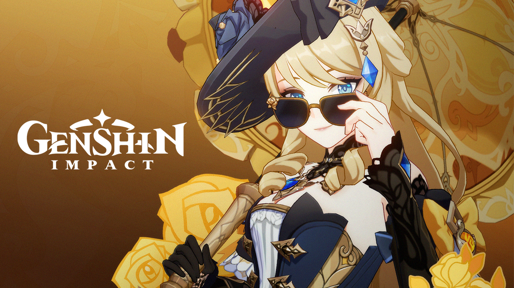
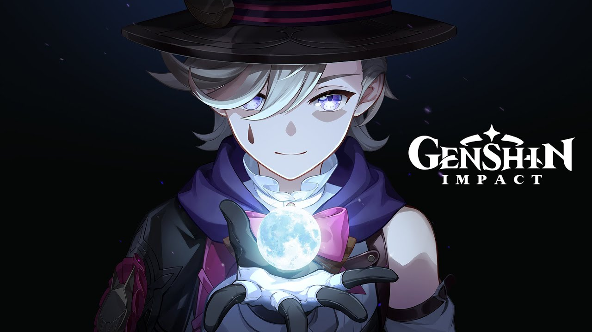
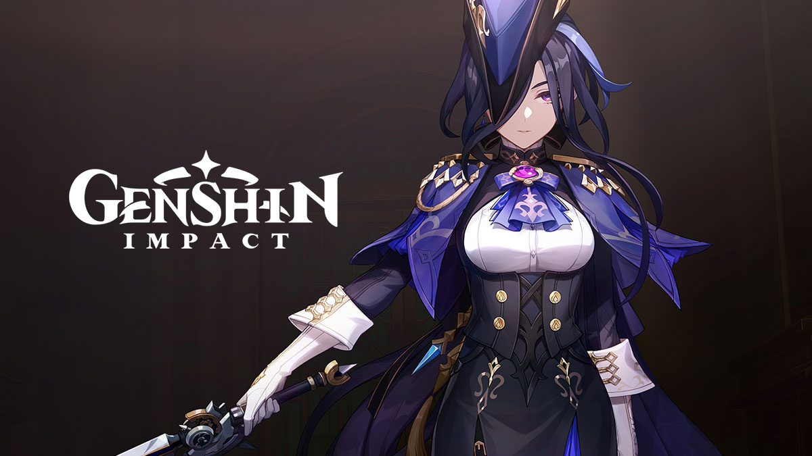
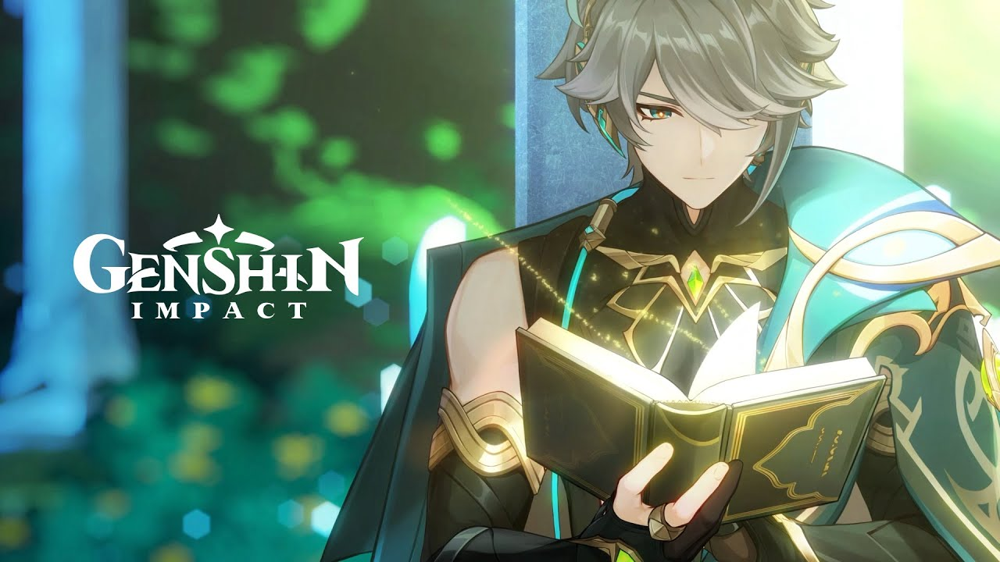
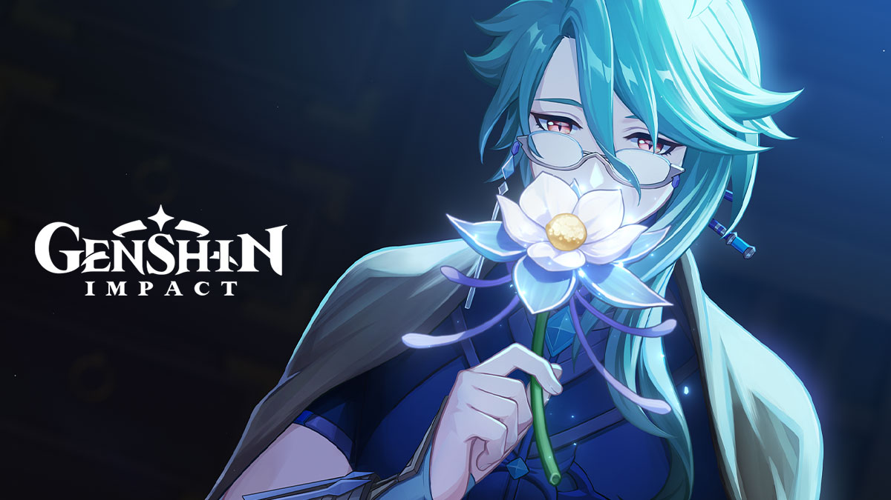
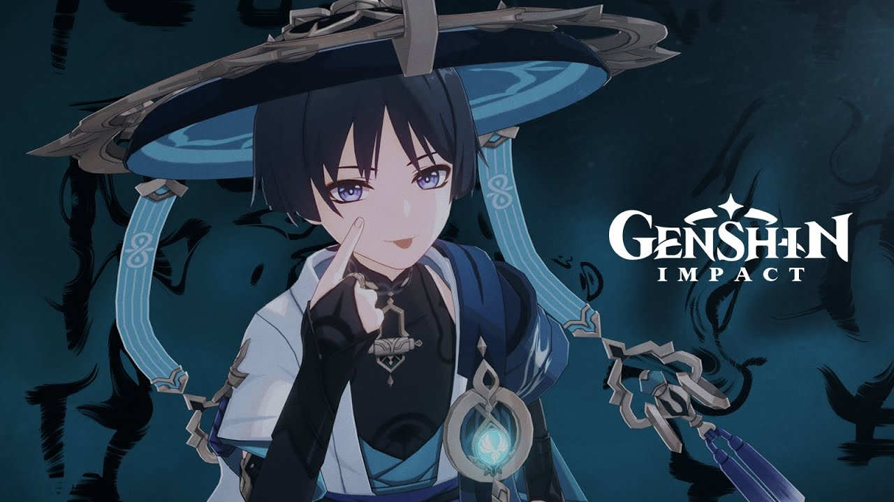
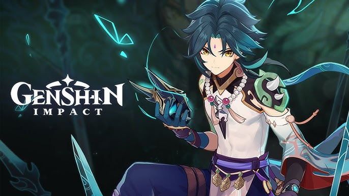

What is Genshin Impact?
Genshin Impact is an open-world action role-playing game set in the world of Teyvat. The game is free-to-play, and throughout the story, players control different characters as they explore the world and battle various enemies.
Characters
Tartaglia

Tartaglia, also known as Childe, is a powerful character and a member of the Fatui faction.
Venti
Venti is the god of wind and the protector of Mondstadt, one of the most beloved characters in the game.
Wriothesley

Wriothesley is a nobleman of the Land of the Sumeru, known for his cold and calculating demeanor, but also a skilled fighter.
Zhongli
Zhongli is the geo archon of Liyue, known for his wisdom and stoic nature, and a master of geo-based combat.
Albedo
Albedo is the Chief Alchemist of Mondstadt and an adeptus who specializes in geo magic and scientific research.
Kazuha

Kazuha is a wandering swordsman from Inazuma who wields the Anemo element and has a calm and poetic personality.
Raiden Shogun
.jpg)
Raiden Shogun is the Electro Archon of Inazuma, a fierce and disciplined ruler who is deeply committed to her vision of eternity.
Arataki Itto
.jpg)
Arataki Itto is a charismatic and boisterous oni from Inazuma. He is known for his strength, playful nature, and leadership of the Arataki gang.
Kinich
.jpg)
Kinich is a mysterious character from an ancient civilization, known for his mastery over the Sun and Light elemental powers. His motives are unclear, but his strength is undeniable.
Neauvilette

Neuvillette is the Chief Justice of Fontaine, known for his calm demeanor and strong sense of justice. He wields the Hydro element and possesses incredible wisdom.
Navia
Navia is the leader of the Spina di Rosula, an independent faction in Fontaine. She wields a Geo vision and fights with a refined but powerful style.
Lyney
Lyney is a master illusionist and performer from Fontaine. With a Pyro vision, he combines magic and battle, mesmerizing both audiences and opponents.
Clorinde
Clorinde is a renowned duelist from Fontaine, known for her swift and precise combat techniques. She fights with an Electro vision and carries a deep sense of honor.
Alhaitham
Alhaitham is a scholar from Sumeru, specializing in logic and reasoning. With his Dendro vision, he wields a unique combat style based on intellect.
Baizhu
Baizhu is a doctor from Liyue, known for his knowledge of herbal medicine. He possesses a Dendro vision and takes care of Qiqi at Bubu Pharmacy.
Wanderer
Formerly a Fatui Harbinger, Scaramouche has now taken the name Wanderer. He wields an Anemo vision and seeks his own path, free from his past.
Xiao
The Liyue Adeptus who fights using the Anemo element, choosing a solitary life due to his demon past.
Game Features
- Open world where you can freely explore the world of Teyvat.
- Characters with different elemental abilities, each offering unique combat styles.
- A dynamic combat system that allows for various combinations and strategies.
- Beautiful graphics and detailed environments.